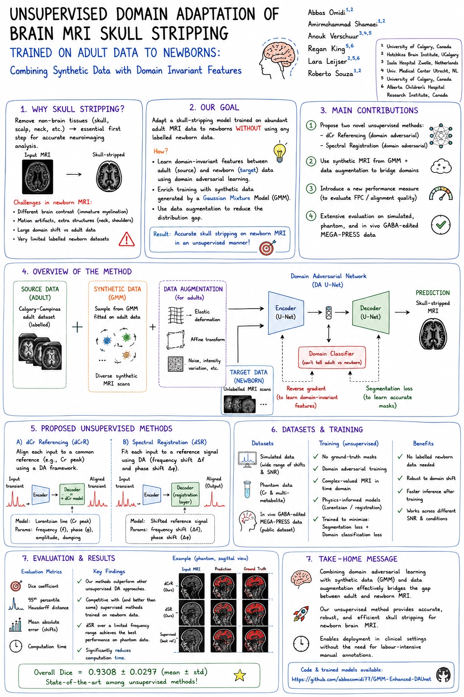

Domain adaptation · Publication
Newborn skull stripping
An unsupervised approach that combines domain-invariant features, synthetic MRI data, and augmentation to adapt adult brain models to newborn scans without labeled newborn data.

Domain adaptation · Publication
An unsupervised approach that combines domain-invariant features, synthetic MRI data, and augmentation to adapt adult brain models to newborn scans without labeled newborn data.
